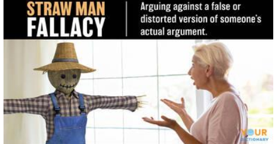
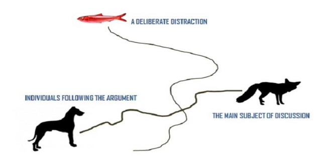
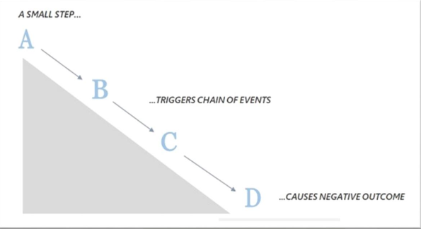

Chapter five
By the end of this chapter, you will be able to:
Example:
P1: All factories are plants.
P2: All plants are things that contain chlorophyll.
C: Therefore, all factories are things that contain chlorophyll.
While the form (All A are B; All B are C; Therefore, All A are C) is formally valid, the argument fails due to a shift in the meaning of the word "plants," which is an informal fallacy.
The presentation that follows divides twenty-two informal fallacies into five main groups:
| Fallacies Of Relevance | Fallacies Of Weak Induction | Fallacies Of Presumption | Fallacies Of Ambiguity | Fallacies Of Grammatical Analogy |
|---|---|---|---|---|
| 1. Appeal To Force | 1. Unqualified Authority | 1. Begging The Question | 1. Equivocation | 1. Division |
| 2. Appeal To Pity | 2. Appeal To Ignorance | 2. Complex Question | 2. Amphiboly | 2. Composition |
| 3. Appeal To People | 3. False-cause | 3. False Dichotomy | ||
| 4. Straw Man | 4. Hasty Generalization | 4. Suppressed Evidence | ||
| 5. Accident | 5. Slippery Slope | |||
| 6. Red Herring | 6. Weak Analogy | |||
| 7. Missing the point | ||||
| 8. Argument against the person |
The fallacies of relevance share a common characteristic: the premises may be psychologically persuasive or emotionally appealing, but they are logically irrelevant to the conclusion. They create a psychological illusion of validity, even though there is no logical connection.
Fallacies of relevance include:
Argumentum ad baculum, Latin for "argument to the cudgel" or "appeal to the stick," is the fallacy where someone tries to win an argument by wielding the threat of negative consequences for disagreeing.
The fallacy of appeal to the people takes advantage of desires for love, respect, admiration, and acceptance. It uses emotional tactics to stir up crowd emotions and gain acceptance for a conclusion.
Example: "Join us in protesting against this policy! We are the voice of the people, and together, we can make a difference. Let's show the government that we won't stand for this injustice!"
This arguer tries to rally people by appealing to their shared identity as "the voice of the people," creating a sense of unity and strength to sway individuals to accept the conclusion and participate.
The indirect approach targets individuals within a crowd, focusing on their relationship with the larger group. This includes:
"Don't miss out on the latest fashion trend! Everyone is wearing these sneakers."
"This limited-edition watch is reserved for discerning connoisseurs who truly appreciate luxury."
"Use this skincare product to achieve flawless skin and become the envy of your friends."
An appeal to pity is an attempt to support a conclusion by merely evoking pity in one's audience.
Structure:
X is true.
It would be terrible if X was not true.
Therefore, X must be true.
This vulnerability to empathy leaves us susceptible to manipulating emotions to sway our judgment.
In each case, the personal hardship is irrelevant to the objective criteria required (academic merit, job qualifications, evidence of guilt, justice for the crime).
Not every appeal to compassion is a fallacy. Genuine calls for empathy can be powerful and ethically sound.
Example: "As a result of war and famine, thousands of children in country X are malnourished. You can help by sending money to Relief Agency Y. So, please send what you can."
This is a genuine appeal if there is credible evidence of malnutrition and the proposed response is a reasonable way to help.
The Ad Hominem fallacy attempts to discredit an argument by discrediting the arguer.
Ad hominem has three types:
This fallacy involves attacking the person making an argument instead of addressing the argument itself, especially when the attack is completely irrelevant.
Example: "Tony claims that the origin of life was an 'accident,' but how can we trust him? He's a godless person who has spent more time in jail than in church."
The personal characteristics of Tony (religious beliefs, criminal history) are entirely irrelevant to his argument about the origin of life.
Note: When others resort to personal attacks, it can be a sign of their desperation rather than a valid rebuttal of your position.
There are situations where questioning someone's character can be relevant to the discussion. The key lies in the connection between the attack and the argument's topic.
A circumstantial ad hominem fallacy is committed when someone attempts to refute an argument by attacking the motives or circumstances of the person making it, rather than addressing the argument itself.
This fallacy assumes that someone's vested interests or life experiences automatically render their opinions unreliable, which is not necessarily true.
In each case, the argument is dismissed based on the speaker's perceived motive or circumstance, ignoring the potential merit of the reasoning itself.
Dismissing an argument based solely on the speaker's past actions or inconsistencies is known as the "tu quoque" fallacy. This assumes that hypocrisy automatically invalidates an argument.
Examples:
In these cases, the fallacy is committed by focusing on perceived hypocrisy rather than the merit of the argument. It's important to remember that inconsistency doesn't always equal wrongness.
The straw man fallacy is committed when someone attempts to refute an argument by attacking a distorted, exaggerated, or simplified version of it, rather than engaging with the actual claims presented.
Instead of addressing the true argument, the straw man fallacy attacks a weaker or easily refuted version, giving the impression of victory without addressing the key points.

The accident fallacy occurs when a general principle is misapplied to an exceptional case that it was not designed to address, leading to an erroneous conclusion.
EXAMPLE: "Driving above the speed limit is illegal. Therefore, it should be illegal to drive faster than the speed limit even in emergencies."
This commits the fallacy by applying the general rule to all situations, including emergencies where exceeding the limit may be necessary for public safety. It fails to consider the unique context.
The fallacy of "missing the point" occurs when someone ignores the actual issue at hand and instead presents a conclusion that is not logically connected to the premises.
"Crimes of theft and robbery have been increasing at an alarming rate lately. The conclusion is obvious: we must reinstate the death penalty immediately."
In this case, the conclusion of reinstating the death penalty is not directly supported by the premises about an increase in theft and robbery. The argument "misses the point" by failing to address an appropriate solution that logically follows from the premises.
The red herring fallacy occurs when the person making an argument intentionally redirects the attention of the audience by introducing a different topic, which may be subtly related but is not directly relevant to the original issue at hand.
This fallacy is also known as the "off-the-track" fallacy. Its purpose is to divert attention and steer the discussion away from the main point.

Identify the fallacies of relevance committed by the following arguments, giving a brief explanation for your answer.
The fallacies of weak induction differ from fallacies of relevance. Their flaw lies not in having logically irrelevant premises, but in the insufficiency of the connection between the premises and the conclusion. The connection is not strong enough to adequately support the conclusion.
This category includes:
This fallacy occurs when the authority or witness being cited is not reliable or trustworthy. Reasons for this may include:
Imagine a popular actor named Alex promoting a new diet plan. Alex claims to have achieved remarkable weight loss and encourages followers to try it.
While Alex is admired for their acting, they do not possess expertise in nutrition. Their success in entertainment does not make them a reliable source of dietary advice.
The appeal to unqualified authority fallacy occurs when people are swayed by Alex's celebrity status and assume their endorsement is based on genuine expertise. Relying solely on the endorsement of a celebrity, despite their lack of qualifications, is fallacious.
Sarah argues, "The surgeon-general has stated that babies should receive the MMR vaccine. So, it is unquestionable that they should."
Sarah is using the statement as an appeal to authority without critically assessing the evidence behind the recommendation. Instead of presenting a well-reasoned argument, she simply relies on the authority of the surgeon-general to make her case.
While the surgeon-general is a recognized authority, it is important to critically examine the evidence behind any recommendation rather than accepting it blindly based solely on the authority's position.
The appeal to ignorance fallacy occurs when an argument's premises state that something has not been proven, but the conclusion asserts a definite claim about it.
Example: "Throughout history, no scientific evidence has been presented to prove the existence of reincarnation. Therefore, it is reasonable to conclude that reincarnation does not occur."
This is fallacious because a lack of evidence is not the same as evidence of absence. It's possible that evidence has not yet been discovered.
Exception: In a court of law, the presumption of innocence until proven guilty is an exception. A defendant is considered innocent because of the absence of proof of guilt.
The fallacy of hasty generalization occurs when a general conclusion is made based on a sample that is biased or too small to accurately represent the entire population.
Example 1: A survey of ten thousand scientists finds that less than 40% believe in God. The conclusion is drawn that most Americans no longer believe in God. (This is a biased sample.)
Example 2: "Over the past six months, I have hired three individuals from India, and all three have been lazy. Therefore, I conclude that Indians, as a group, are lazy." (This is too small a sample.)
The fallacy of false cause occurs when a causal connection between premises and conclusion is assumed, even though there is no substantial evidence to support it.
One common form is the "post hoc ergo propter hoc" fallacy, where a temporal relationship is mistaken for a cause-and-effect relationship.
Example: "Every time I purchased a good seat at the basketball game, our team won. Therefore, my choice of seating caused our team's wins."
This argument assumes that the temporal sequence implies a causal relationship. However, correlation does not necessarily imply causation.
This fallacy occurs when an explanation mistakenly identifies a correlation as a causation. In this fallacy, one thing is presented as the cause of another, but the connection is misunderstood.
This can involve either attributing the effect as the cause or incorrectly assuming cause and effect between two phenomena that are actually both results of a common cause.
This fallacy occurs when an arguer intentionally selects a single factor and presents it as the sole cause or solution to a complex problem, disregarding other intricate details.
Example: "Standardized test scores have been dropping for decades. During this time, the average time a child spends watching TV has increased. The cause is obvious: Kids are watching too much TV."
This oversimplifies the decline by ignoring other potential factors, such as changes in educational policies, socio-economic disparities, or teaching methodologies.
The Slippery Slope fallacy arises when an argument's conclusion is based on the assumption of a chain reaction of events, without adequate justification for believing that the chain reaction will truly occur.
The arguer asserts that if one event happens, it will trigger a series of subsequent events leading to an increasingly negative outcome, but there is insufficient evidence to support this unfolding chain.

"If we allow students to use smartphones in the classroom for educational purposes, it will lead to complete chaos. They will become addicted, lose focus, and ultimately fail their exams. Therefore, we should ban smartphones altogether."
The arguer claims that allowing smartphones will lead to a chain reaction of negative consequences. However, there is no sufficient reason provided to support this assertion. The argument assumes that the mere presence of smartphones will automatically lead to academic failure without considering other factors, like proper guidelines.
The fallacy of weak analogy occurs when an argument relies on an irrelevant or weak comparison, or when a more appropriate dis-analogy is present. It's often likened to "comparing apples with oranges."
The basic structure of an argument from analogy is:
The fallacy occurs when the analogy between A and B is not strong enough to support the conclusion, due to relevant differences.
"Implementing stricter gun control laws is like banning kitchen knives because they can be used as weapons. Just as we restrict access to dangerous objects like knives, we should restrict access to firearms."
This analogy is weak because there are significant differences between firearms and kitchen knives in their purpose, potential for harm, and regulation. Firearms are designed for causing harm, while knives are primarily tools. The analogy fails to provide a relevant comparison and ignores the complexities of gun control.
Identify the fallacies of weak induction committed by the following arguments, giving a brief explanation.
Fallacies of presumption refer to arguments that rely on assumptions that are usually not explicitly stated or backed up with evidence.
These fallacies are like whispers in the dark, guiding the argument without ever appearing in the light. Bringing them out into the open exposes their lack of substance.
The fallacies of presumption include:
This fallacy is committed whenever the arguer creates the illusion that inadequate premises provide adequate support for the conclusion by leaving out a possibly false key premise, or by restating a possibly false premise as the conclusion (reasoning in a circle).
This fallacy occurs when an arguer asks a question that includes an unfair or unwarranted presupposition. It is often intended to trap the respondent into acknowledging something they may not want to admit.
Example: "Have you stopped beating your spouse?"
This question is loaded because it assumes the person being asked has been beating their spouse. By phrasing it this way, the arguer tries to trap the respondent into admitting guilt, as either a "yes" or "no" answer implies past wrongdoing.
The fallacy of false dichotomy occurs when an argument attempts to manipulate by creating the impression that there are only two choices available, when in reality, there could be a broader range of options.
This is also known as false binary or black-and-white thinking.
General Structure:
Either claim X is true or claim Y is true.
Claim Y is false.
Therefore, claim X must be true.
This is fallacious when the "Either/Or" premise wrongly excludes other possibilities.
This fallacy occurs when someone presents evidence in support of their position but intentionally omits or suppresses relevant evidence that could weaken or contradict their conclusion.
The arguer selectively presents information that supports their viewpoint while disregarding or concealing evidence that might challenge it. By withholding crucial evidence, they create a skewed or incomplete picture of the issue at hand.
This is particularly misleading with statistical data, where selectively presenting statistics can create a false impression.
Note: Suppressed evidence often involves cherry-picking data to create a misleading impression.
These fallacies arise from the occurrence of some form of ambiguity in either the premises or the conclusion (or both). An expression is ambiguous if it is susceptible to different interpretations in a given context.
This category includes:
Equivocation is a logical fallacy that arises when an argument relies on the ambiguity of a word or phrase, using it in two different senses to reach a faulty conclusion.
Example 1:
Premise 1: Some triangles are obtuse.
Premise 2: Whatever is obtuse is ignorant.
Conclusion: Therefore, some triangles are ignorant.
Here, "obtuse" shifts from a geometric meaning to a metaphorical one for ignorance.
Example 2:
Premise 1: Any law can be repealed by the legislative authority.
Premise 2: But the law of gravity is a law.
Conclusion: Therefore, the law of gravity can be repealed.
Here, "law" shifts from a legal rule to a natural principle.
The fallacy of amphiboly occurs when an arguer misinterprets an ambiguous statement and draws a conclusion based on this faulty interpretation. The ambiguity often arises from a dangling modifier, an ambiguous pronoun, or a careless arrangement of words.
Example 1:
Statement: The tour guide said that standing in Greenwich Village, the Empire State Building could easily be seen.
Faulty Conclusion: It follows that the Empire State Building is in Greenwich Village.
The statement is ambiguous due to the placement of the modifier "standing in Greenwich Village." The faulty conclusion misinterprets the statement to mean the building is located there.
Example 2:
Statement: John told Henry that he had made a mistake.
Faulty Conclusion: It follows that John has the courage to admit his own mistakes.
The ambiguity arises from the pronoun "he." It could be interpreted as John admitting his own mistake or informing Henry that Henry made a mistake. The conclusion assumes the former.
Example 3:
Statement: Professor Johnson will give a lecture about heart failure in the biology lecture hall.
Faulty Conclusion: It must be that a number of heart failures have occurred there recently.
The faulty conclusion assumes the topic of the lecture implies a recent occurrence at that location.
A dangling modifier is a grammatical error where a modifier does not clearly and logically modify the intended word. As a result, it "dangles" without a clear connection, leading to ambiguity.
Dangling: Walking down the street, the trees appeared beautiful.
Corrected: Walking down the street, I saw the beautiful trees.
In the dangling version, it appears as if the trees themselves are walking down the street. To avoid this, ensure the modifier is placed next to the word it is intended to modify.
An ambiguous antecedent occurs when it is unclear which noun a pronoun is referring to, especially when there are multiple possibilities.
Ambiguous: Sarah told Emily that she should bring a gift.
Unclear Referent: It is unclear who should bring a gift.
To avoid this, rephrase the sentence to provide clarity.
Revised: Sarah told Emily that Emily should bring a gift.
By clarifying the antecedent, we eliminate the ambiguity.
Arguments that commit these fallacies are grammatically analogous to other arguments that are good in every respect. Because of this similarity in linguistic structure, such fallacious arguments may appear good yet be bad.
This category includes:
The fallacy of composition is committed when the conclusion of an argument depends on the erroneous transference of an attribute from the parts of something onto the whole.
In other words, the fallacy occurs when it is argued that because the parts have a certain attribute, it follows that the whole must have that attribute too.
The first type is an invalid inference from the nature of the parts to the nature of the whole.
EXAMPLE: Each player on the football team is outstanding. Hence, the team itself is outstanding.
The second type is an invalid inference from attributes of members of a group to attributes of the group itself.
EXAMPLE: Elephants eat more than humans. So, elephants taken as a group eat more than humans taken as a group.
Note that not all part-to-whole inferences are invalid (e.g., if each part of a machine has weight, the machine itself has weight).
Example of the Difference:
General statement: "Every student in this class is over 18."
Class statement: "This class is composed of adult learners." (The group is adult learners, but an individual might be younger.)
The fallacy of division assumes that just because something is true for a whole group, it must be true for every individual member of that group.
Here are examples:
Identify the fallacies of presumption, ambiguity, and grammatical analogy in the following arguments. If no fallacy is committed, write "no fallacy."